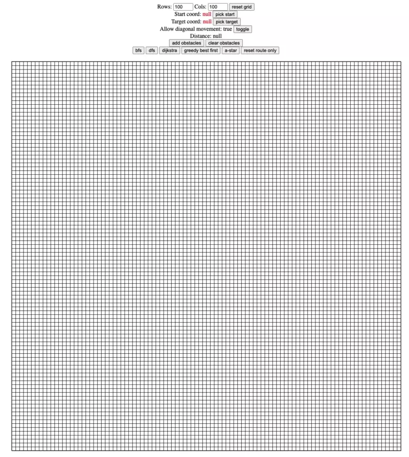

Path Finding
It all started with Leetcode #417 Pacific Atlantic Water Flow given to me during a phone screen quite some time back.
I thought I could just wing it without any prep and boy was I wrong and I flunked it hard. I knew the solution on a theoretical level but couldn’t figure out how to implement it.
As someone from a non-CS background (degree in mechanical engineering), I must admit that algorithms and data structures isn’t my strong suit. Sure, I know of their existence but never to the level where I am able to implement them effectively. I mean these are just some “low level implementation” that can be added with some third-party package if need be right?
After that horrible phone screen, I started looking at the various graph questions, dug into the theories and was really intrigued by it.
I eventually got better at graph questions but as a visual learner, I always wondered how exactly does the various path finding algorithms look like when visualized on a screen.
So I decided to build an application to visalize it.
There’s some tweaks required to the A* implementation (adjusting heuristic value) and also the overall styling (going for the retro look here eh) but I will leave it as it for now.
Try it out yourself here.
Reference materials:
- https://theory.stanford.edu/~amitp/GameProgramming/AStarComparison.html
- https://stackoverflow.com/questions/5687882/what-are-some-good-methods-to-finding-a-heuristic-for-the-a-algorithm
- https://theory.stanford.edu/~amitp/GameProgramming/Variations.html#any-angle-movement
- https://www.redblobgames.com/pathfinding/a-star/introduction.html